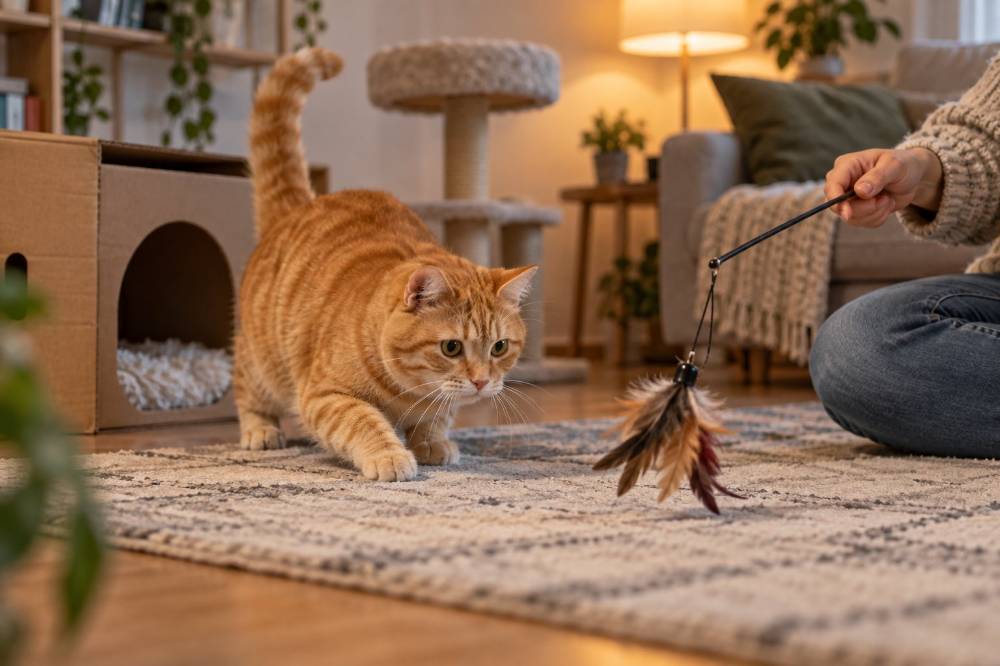

Give your indoor cat reliable access to food, water, litter, safe hiding and resting places, scratching, and short hunting-style play. Keep interaction predictable while letting the cat choose when to join.
An indoor cat does not need an hourly entertainment schedule, but a predictable home should offer more than a bowl and a sofa. Cats need chances to retreat, climb, scratch, hunt through play, and control social contact. A useful routine weaves those choices into the day without turning every quiet moment into another activity.
Build the environment before the timetable
Walk through the home from your cat’s point of view. Is there a safe place to rest away from foot traffic? Can the cat reach food, water, and a litter box without crossing another pet’s favorite doorway? Are scratching and climbing options stable? The Feline Veterinary Medical Association emphasizes safe places, separated key resources, play, and predictable positive interaction. A schedule cannot compensate for a home where every resource is crowded into one exposed corner.
Offer at least one hiding or resting place the cat can enter voluntarily. A sturdy box, covered bed, or elevated perch may work. In a multi-cat household, provide choices in different locations so one cat cannot guard all the useful spaces. Food and water need not sit next to litter. A cat who can choose between a quiet high place and a low covered space can respond to household changes without being forced into one spot.
Place scratching surfaces near places the cat already stretches or rests. A post should be stable enough not to wobble. Some cats prefer vertical sisal; others choose horizontal cardboard. Watch what your cat uses and adjust. Do not scold a cat for scratching an available sofa while a neglected post is hidden in another room. Make the desirable choice convenient and reward its use.
Check safety while adding enrichment. Secure shelves and tall furniture, keep strings and wand toys stored between supervised sessions, and avoid small pieces that could be swallowed. A window perch should be stable and the window itself secure. Plants, cords, and cleaning products should be considered from climbing height. An enriched environment is useful only when the cat can explore it without avoidable hazards.
Use short play that resembles a hunt
Interactive play works best when the toy moves like something the cat might stalk: it hides, pauses, darts, and occasionally becomes catchable. Let the cat grab the toy sometimes; endless chasing without a capture can be frustrating. Use a wand toy at a safe distance from hands and feet. A few short sessions may suit many cats better than one long, intense burst, but follow your cat’s age, fitness, and interest.
Choose a time when your cat is naturally active, perhaps morning or evening, and protect a small daily window for play. Put the toy away afterward, especially if it has a string or feather that could be chewed unsupervised. Some cats enjoy a food puzzle or scattered measured kibble that encourages searching. Count puzzle food as part of the normal daily portion so enrichment does not become accidental overfeeding.
Watch the cat’s response. A playful cat may crouch, track, pounce, and pause. A cat who pants, hides, or walks away needs a break. Senior cats and cats with mobility problems can still enjoy low, slow play with a toy moving within easy reach. Do not force jumps or make the cat chase across slippery floors. Ask a veterinarian about a sudden drop in interest in play, especially when appetite or movement changes too.
Rotate a small number of safe toys rather than leaving every object out. Novelty can come from moving a cardboard box, changing the wand toy, or placing a treat puzzle in a different safe spot. Keep favorite resting places stable. Cats often appreciate predictable resources alongside modest changes in play opportunities. You are creating choices, not constant stimulation.

Make feeding and litter care predictable
Feed according to your veterinarian’s advice and the food’s nutritional guidance, using measured portions that fit your cat’s body condition. Some households use several small meals or part of the ration in a puzzle feeder. A cat with a medical diet needs the prescribed plan. In a multi-cat home, observe who actually eats which portion and whether one cat blocks access. A tidy feeding schedule is less useful if a shy cat cannot reach the bowl.
Keep fresh water accessible in more than one suitable location if space allows. Notice your cat’s normal drinking pattern without assuming that every variation is harmless. A sudden increase in thirst or urination deserves veterinary attention. Food and water stations should be easy to reach and clean. A senior cat may struggle with a high or narrow bowl, while another cat may dislike a water bowl beside a noisy appliance.
Scoop litter boxes regularly and place them where cats can approach and leave without being cornered. The number, size, and placement of boxes should suit the cats in the household. Do not hide every box in a cramped utility room if a cat is avoiding that location. A change in litter use can reflect stress, access problems, or illness. Consult a veterinarian promptly for straining, repeated trips, or a cat that cannot urinate; that can be an emergency.
Use routines as observation points. While feeding, notice appetite; while scooping, notice changes in stool or urine; while refreshing water, notice whether consumption seems different. Do not turn these checks into constant surveillance, but write down an unusual change. A simple baseline lets you describe the problem accurately to a veterinary team instead of guessing when it began.
A flexible day at home
Fresh essentials and a brief interaction.
Safe resting, climbing, and independent choices.
Short hunting-style play and calm social time.
Let social contact remain the cat’s choice
Offer predictable positive interaction, such as a brief greeting, gentle petting when invited, or a play session. Let the cat approach and leave. Some cats enjoy sitting nearby without touch; others seek short bursts of affection. Respect those differences rather than reading every departure as rejection. Children should learn to let a resting or hiding cat remain undisturbed. A cat with a safe retreat often feels more confident entering shared space later.
Watch for subtle tension in multi-cat homes. Blocking a hallway, staring near a food station, or occupying the only high perch can matter even without a noisy fight. Spread resources so cats have multiple routes. Provide separate play opportunities for a shy cat if another cat dominates the toy. If tension continues, seek veterinary or qualified feline behavior advice. Adding a second cat as “entertainment” is not automatically an enrichment plan for the first one.
When work hours vary, preserve a few reliable anchors rather than an exact clock time. Morning feeding, an evening play window, and regular litter care can remain predictable even if other tasks move. If you will be away longer than usual, arrange care that includes observation, fresh essentials, and safe interaction appropriate for your cat. An automatic feeder does not replace checking whether the cat is well.
Avoid forcing novelty. A new tunnel or climbing shelf can be introduced near familiar furniture and left for voluntary exploration. Some cats need days before using it. Reward curiosity without pushing the cat through or placing it on a high platform. If the cat suddenly avoids a familiar room or person, consider medical discomfort and environmental changes instead of assuming the cat is simply bored.
Adjust the routine as your cat changes
Kittens often need more frequent safe play and close supervision of toys. Older cats may need easier access to resting places, lower steps, and more comfortable litter boxes. A cat with arthritis or chronic illness may not climb to a former favorite perch, so bring choices within reach and ask the veterinarian about pain or mobility. Do not interpret reduced activity as normal aging without an assessment when the change is new.
Seasonal sunlight, guests, renovations, and a new pet can alter how secure the home feels. Keep familiar safe places available through the change. If you move a resource, consider leaving the old option for a while as the cat learns the new layout. A predictable routine provides stability, but it should flex when the cat’s behavior gives new information. Observe where the cat chooses to rest, scratch, play, and hide.
Review the plan by asking whether your cat has access to essentials and meaningful choices every day. Food, water, clean toileting, resting, scratching, climbing or exploring, play, and positive social contact are all part of the picture. Do not judge success by whether the cat uses every toy you bought. A cat who appears comfortable and can choose between several safe options may be better served than one surrounded by constant novelty.
Start with one practical improvement. Move a scratching post to a place the cat already uses, add a stable hiding box, or schedule a short wand-toy session before your evening routine. Watch the response for a week, then adjust. If behavior changes sharply or basic functions change, contact your veterinarian. Enrichment supports wellbeing, but it does not replace medical care.
A one-week observation log can reveal which enrichment your cat actually uses. Note resting places, play interest, feeding times, and whether the cat avoids a particular route. Do not use the log to force every hour into an activity. Instead, look for bottlenecks: a litter box guarded by another cat, a perch the cat no longer reaches, or a play session always offered when the cat wants to sleep. Change one feature and watch the response.
For a small apartment, vertical space and separated resources can matter more than buying many toys. A stable perch near a secure window, a hideaway in a quiet corner, and a scratching surface by a favored route create different choices within limited floor area. Do not place a perch where a cat can access an unsafe window or hot appliance. In multi-cat homes, multiple routes and resting sites reduce the chance that one animal controls a single narrow passage.
During holidays or guest visits, protect the routine’s anchors: food, water, litter access, and a place to retreat. Tell guests not to pull a cat from hiding. Move noisy gatherings away from the cat’s resources when possible. If the cat stops eating, hides unusually long, or changes litter habits, call a veterinarian rather than assuming the cat will simply adjust. Environmental stress and medical problems can look similar from a distance.
The routine should also leave room for doing nothing. Rest is a normal part of a cat’s day. A cat who is safe, has access to resources, and chooses to nap does not need constant entertainment. Offer play and interaction at predictable opportunities, then let the cat decide whether to participate. That balance of availability and control is what makes an indoor home feel more usable to the cat.
A cat who prefers solitude still needs accessible options. Put a hiding box where visitors cannot reach in, maintain a clear route to water and litter, and let the cat emerge on its own. A shy cat may play after the room becomes quiet rather than during a busy family hour. Offering the same calm opportunity regularly can reveal a preference that a rigid schedule misses. Choice is a practical design feature of the home, not simply a personality label.
Continue exploring
For a broader routine, read How to Help Your Dog Stay Calm During Car Rides, How to Stop a Dog From Barking at Everything, and How to Teach a Dog to Settle on a Mat.
Frequently Asked Questions
How much play does an indoor cat need?
There is no single time target for every cat. Offer regular short interactive sessions and adjust to age, health, and interest. Let the cat catch the toy sometimes and stop when the cat needs a break.
Does an indoor cat need another cat for company?
Not necessarily. Some cats enjoy compatible companions; others prefer space. Meet the individual cat’s environmental and social needs rather than assuming another cat will solve boredom.
What if my cat suddenly stops playing?
A new drop in activity can reflect pain or illness as well as a changed environment. Check for other changes in appetite, movement, or litter use and contact a veterinarian.
Editorial references
These resources informed the general guidance in this article. They do not replace advice tailored to your pet.
This guide offers general information. Your pet’s age, health, and history may call for a different plan. For medical concerns, ask your veterinarian.